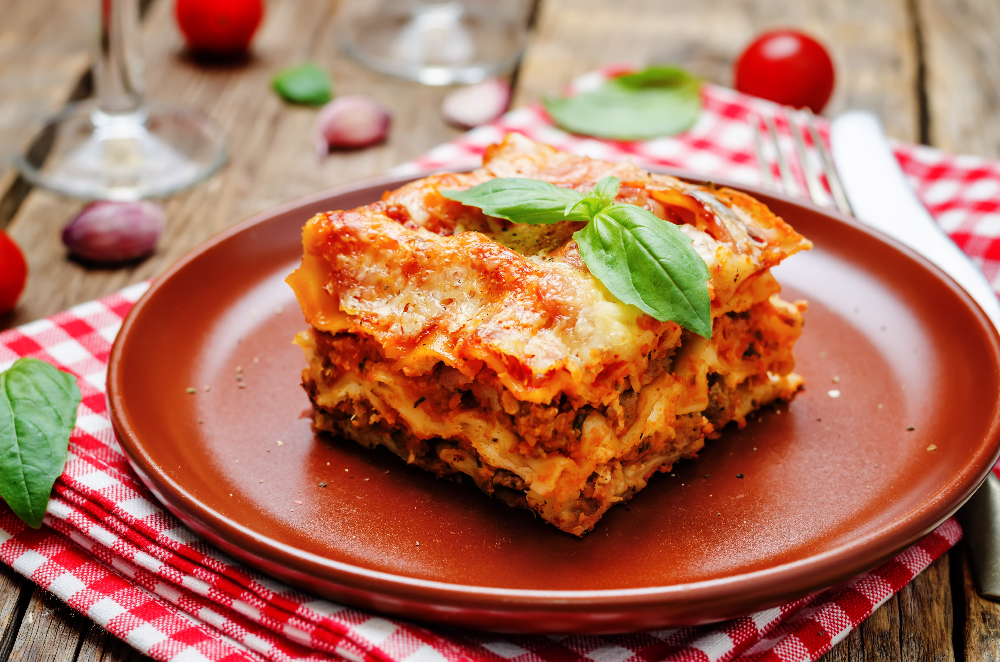
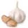
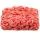
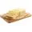

Carne de Panela
Ingredientes (6porções)
 500 g de massa de
lasanha
500 g de massa de
lasanha-
.webp) 2 caixas de
creme de leite
2 caixas de
creme de leite  3 colheres de
farinha de trigo
3 colheres de
farinha de trigo- 500 g de mussarela
 2 copos de leite
2 copos de leite 3 colheres de óleo
3 colheres de óleo
- 3 dentes de alho amassados
- 500 g de carne moída
- 3 colheres de manteiga
- 500 g de presunto
- sal a gosto
- 1 cebola ralada
- 1 caixa de molho de tomate
- 1 pacote de queijo ralado
Modo de preparo

Modo de
preparo:45min.
Lasanha
- Cozinhe a massa segundo as orientações do fabricante, despeje em um refratário com água gelada para não grudar e reserve.
- Molho à bolonhesa Refogue o alho, a cebola, a carne moída, o molho de tomate, deixe cozinhar por 3 minutos e reserve.
- Molho branco Derreta a margarina, coloque as 3 colheres de farinha de trigo e mexa.
- Despeje o leite aos poucos e continue mexendo.
- Por último, coloque o creme de leite, mexa por 1 minuto e desligue o fogo.
- Retire do fogo, tire a pressão e junte as batatas e o cheiro-verde.
- Coloque na panela de pressão novamente, conte 5 minutos após a panela de pressão começar a apitar e desligue o fogo.